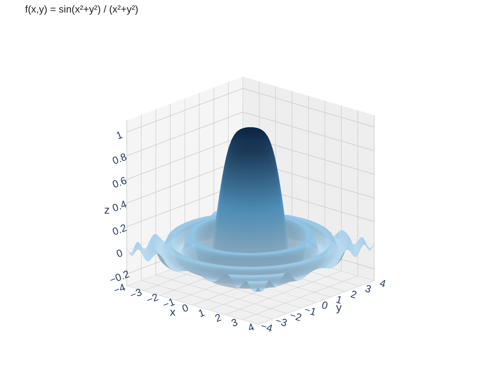
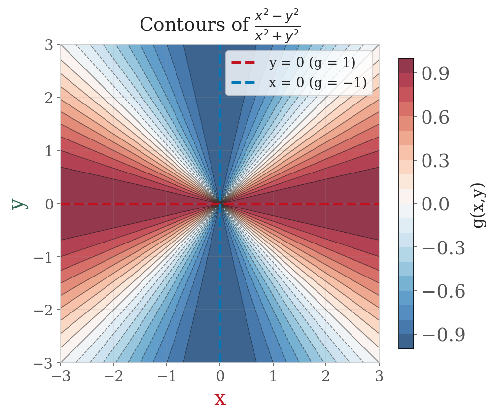

Section 14.2: Limits and Continuity
Partial Derivatives
MTH 310
Calculus III
Limits in Multiple Variables
Two Functions, Two Very Different Behaviors




The Formal Definition of a Multivariable Limit
Limit of a Function of Two Variables
Let \(f\) be a function of two variables whose domain \(D\) includes points arbitrarily close to \((a, b)\). We say that the limit of \(f(x,y)\) as \((x,y)\) approaches \((a,b)\) is \(L\), and write
\[\lim_{(x,y) \to (a,b)} f(x,y) = L\]
if for every \(\varepsilon > 0\) there is a corresponding \(\delta > 0\) such that
\[\text{if } (x,y) \in D \text{ and } 0 < \sqrt{(x-a)^2 + (y-b)^2} < \delta \text{ then } |f(x,y) - L| < \varepsilon\]
Strategy: Showing a Limit Does NOT Exist
Example 1: The Two-Path Test in Action
Example 1
Show that \(\displaystyle\lim_{(x,y) \to (0,0)} \frac{x^2 - y^2}{x^2 + y^2}\) does not exist.
Example 2: When Simple Paths Aren't Enough
Example 2
Show that \(\displaystyle\lim_{(x,y) \to (0,0)} \frac{8x^3 y}{x^6 + y^2}\) does not exist.
Your Turn: Test This Limit
Example 3
Does \(\displaystyle\lim_{(x,y) \to (0,0)} \frac{xy}{x^2 + y^2}\) exist?
Continuity of Multivariable Functions
Continuity at a Point
A function \(f\) of two variables is continuous at \((a, b)\) if:
\[\lim_{(x,y) \to (a,b)} f(x,y) = f(a,b)\]
This requires three things (same as Calc I):
- \(f(a,b)\) is defined
- The limit exists
- They are equal
Strategy: Showing a Limit DOES Exist
Example 4: Proving a Limit Exists
Example 4
Show that \(\displaystyle\lim_{(x,y) \to (0,0)} \frac{5xy^2}{x^2 + y^2} = 0\).
Your Turn: Prove or Disprove
Example 5
Does \(\displaystyle\lim_{(x,y) \to (0,0)} \frac{x^2 y}{x^2 + y^2}\) exist? If so, find its value.